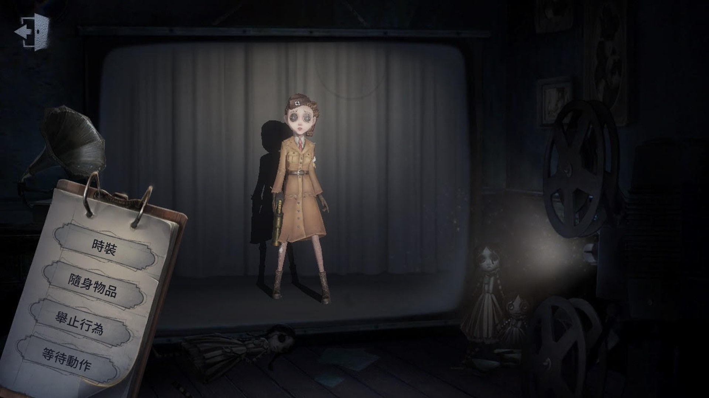
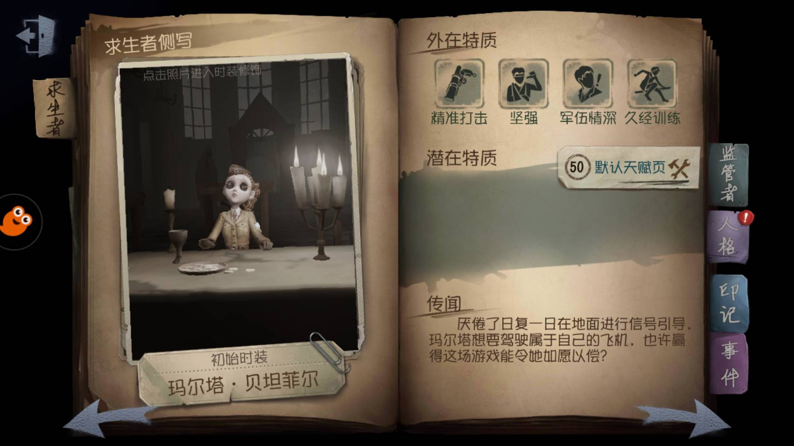

空軍

【人物介紹】
名字：瑪爾塔‧貝坦菲爾
瑪爾塔從小就擅長騎馬射擊，並在加入騎兵隊後取得了上尉軍銜。不滿足於在馬背上馳騁，瑪爾塔學習了基礎的飛機駕駛技巧，並很快沉迷其中。她放棄了在騎兵隊的職位，加入空軍，但瑪爾塔並沒有如願當上飛行員，反而被要求在地面執行信號引導的工作。想要駕駛屬於自己的飛機，她得找到可靠的“贊助商”才行。
【能力介紹】
精準打擊： 隨身攜帶信號槍，擊中監管者後其眩暈時間增加30%。
堅強：意志堅定，在狂歡之椅上堅持時間增加30%。
軍伍情深：當有同伴被放上狂歡之椅，其破譯速度和開啟密碼門速度均會降低60%。
久經訓練：久經軍伍訓練，身手敏捷，板窗交互速度提升10%。
初始道具為信號槍，當有人被放上狂歡之椅時，空軍的破譯速度會大幅降低，所以空軍在隊伍中的定位通常是救人的角色，配合信號槍，可以有效掩護自己及隊友安全逃離。
